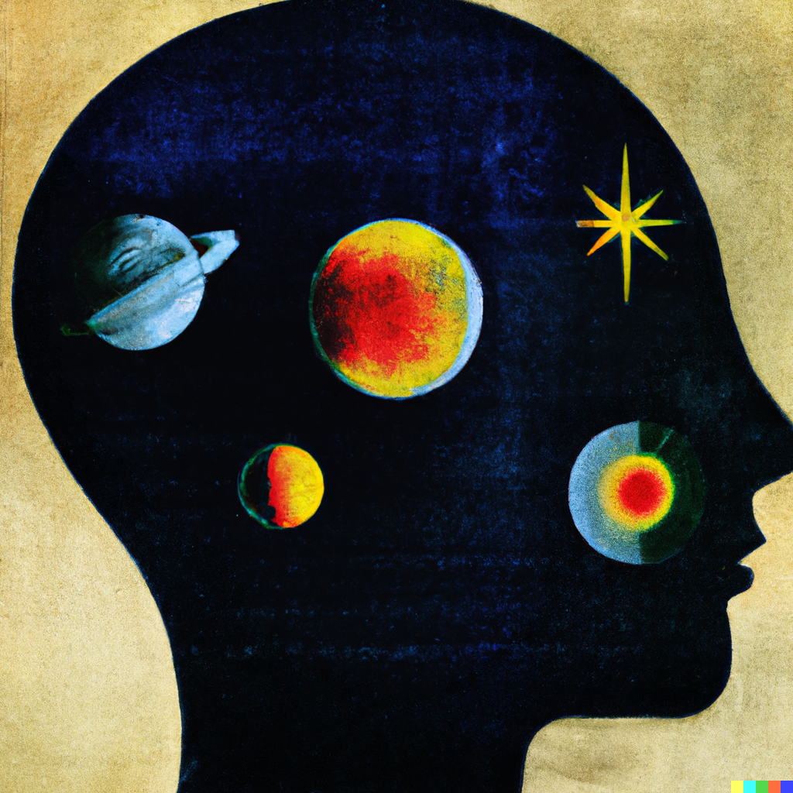
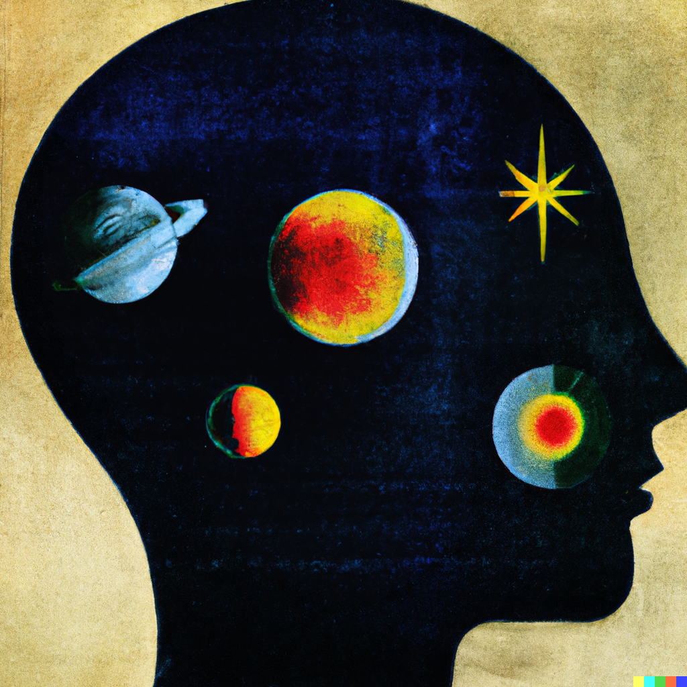

Overview
For the first 6 months of 2022, I made 1 piece of generative art per day in an attempt to use my computer science studies for more creative endeavors. I am currently preparing the art and code for sharing, but I will show some highlights here. Note that the images and videos are downsampled and cropped so that they can be easily served on the website.
01/01
The first day of the generative art challenge. This work uses CLIP and a GAN as described in this blog I wrote last semester for a deep learning class. The prompt that I used to generate this image is "colorful vivid fractals". After generating the original animation, I also used a GAN for image interpolation (to increase the framerate) and a GAN for super-resolution on each frame.
01/29
This is the first work that improves the image quality through direct gradient manipulation. For all of January, I was making art mostly with CLIP + GAN, but I was only changing the prompts and other features for the gradient to take into account. I tried encoding an image with CLIP and using this as a penalty term in the loss (to keep the generated image semantically similar), adding image optimization loss items (sharpness, different colors, etc...). This piece, which cycles through scenes by various artists, is the first time I changed how the image changes as a result of the loss. The prompts used, in this order, are "art in the style of Wojcieck Siudmak", "art in the style of Keith Haring", "a dinosaur in the style of James Gurney", "a creature in the style of Zdzislaw Beksinski", then "a landscape in the style of Albert Bierstad".
02/17
This is my favorite generated image from the series. Not for any technical reason, but rather because it highlights how human-computer interaction can go both ways. Originally, I wanted to create recreate this image but in a different style (that of Greg Rutkowski). However, after trying different prompts, image initializations, and gradient manipulation tricks to make the image more coherent, I realized I actually preferred the more abstract style that the GAN was creating. So, instead, I tried to generate an image like the one above. To me, this image shows that text-to-image art can do more than act as a tool to quickly generate art; it can act as inspiration as well. The prompt for this image is "I can't find my mind by Greg Rutkowski, oil on canvas".
03/02
This is the first successful diffusion image I created. This image was created using CLIP-guided diffusion (great explanation here). The prompt is the same as the 02-17 image: "I can't find my mind by Greg Rutkowski, oil on canvas". Note the difference in coherence between the GAN and diffusion-generated images.
05/03
 

This series of images shows the workflow that I used for the last month or so of the series. The first image is the output of a CLIP-guided diffusion model with the prompt, "What do you think my brain is made for. Is it just a container for the mind? This great grey matter. By Wassily Kandinsky." (lyrics from "Pink Matter" by Frank Ocean). The second and third images are variations produced by DALL-E 2, based on the original image. Although I am hesitant to use the text-to-image service instead of using code I wrote to generate art, it is interesting to see the capabilities and limitations of the SOTA system. For example, note how DALL-E does not respect the original direction of the face in the image. This is characteristic of nearly all text-to-image models: they do not do well with hard constraints (number of objects, absolute directions). I want to improve these models by teaching them to respect symbolic constraints.